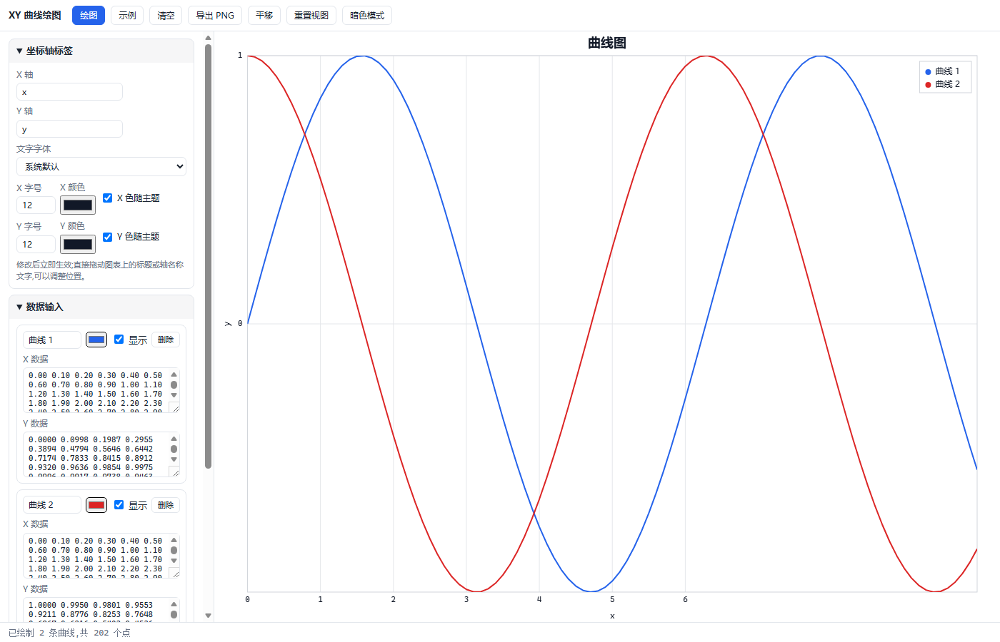
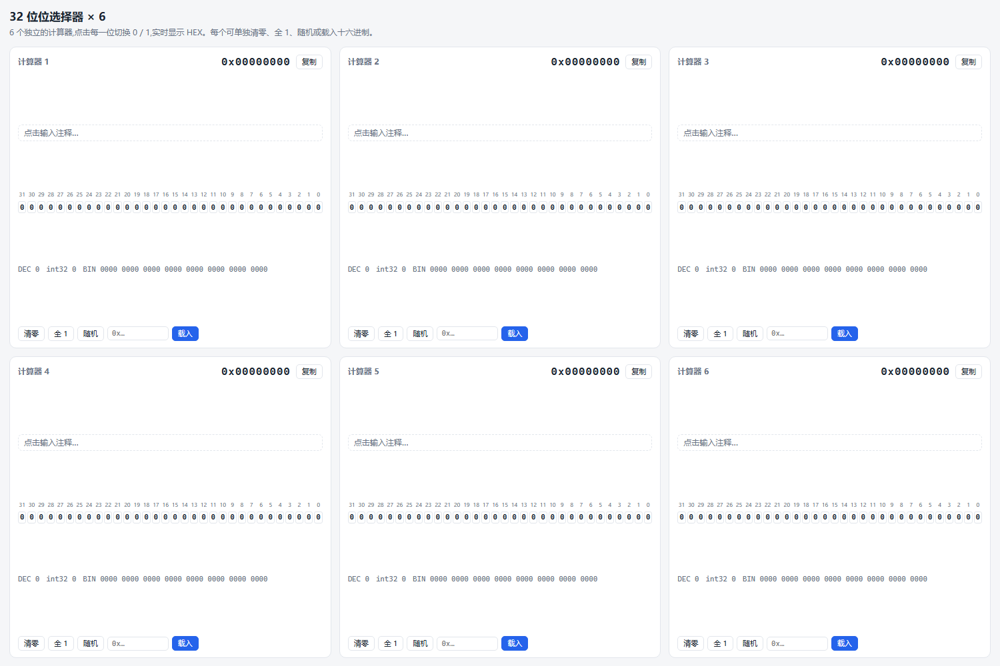
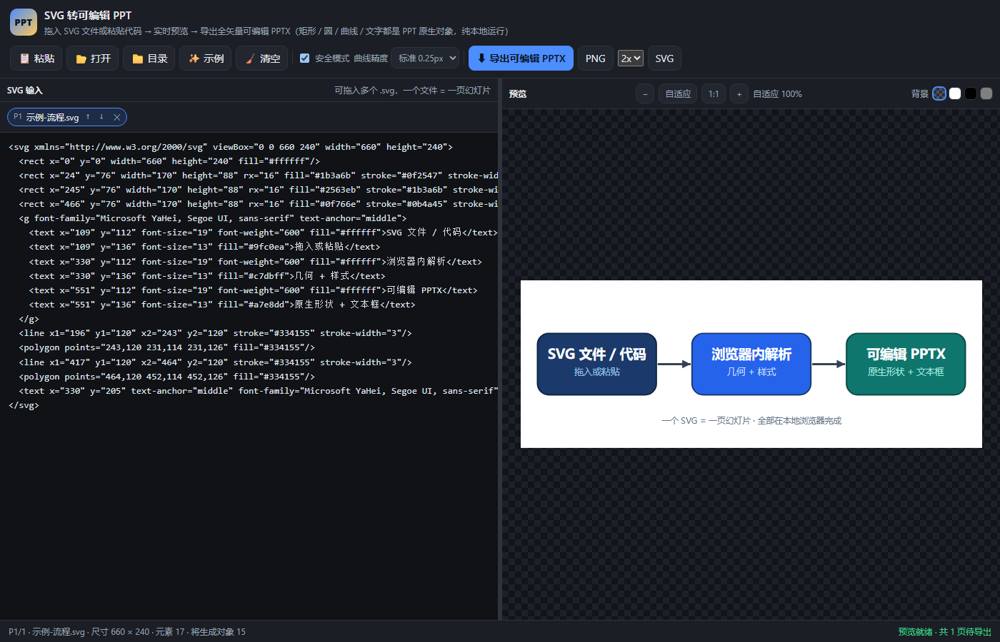
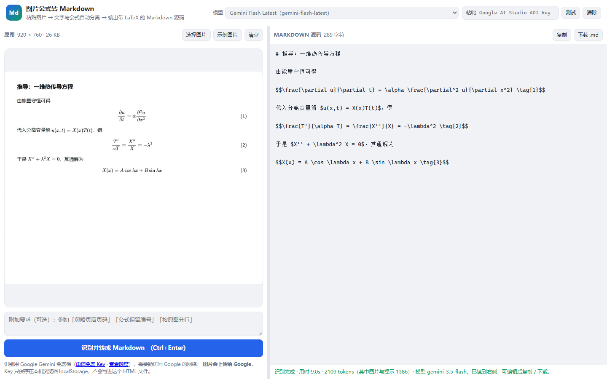

轻量网页工具 · 纯本地运行 · 无需安装

X、Y 数据分框粘贴,支持多曲线、Log 坐标、多种刻度方式,标题与轴标签可自由调整。
绘图多曲线Log
6 个独立的 32 位数值编辑器,逐位开关实时转换 HEX / 十进制,可写注释。
位操作HEX×6
拖入 SVG 文件或粘贴代码,实时预览后导出全矢量可编辑 PPTX —— 矩形、圆、曲线与文字都是 PPT 原生对象,一个 SVG 一页幻灯片。
转换PPT可编辑
粘贴图片,把普通文字和数学公式自动分开,公式转成 LaTeX,直接得到可复制的 Markdown 源码。用 Google Gemini 免费档识别,自带免费 Key 即可。
公式识别LaTeXMarkdown